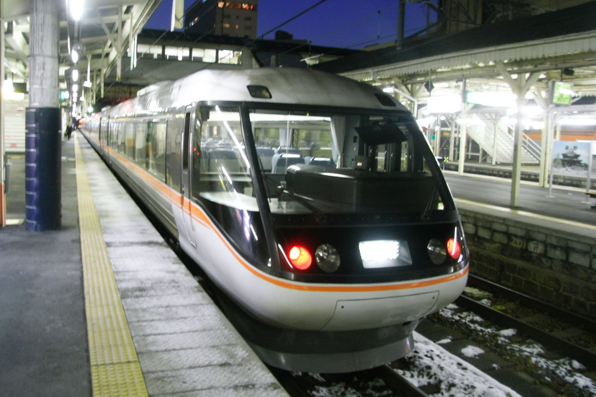
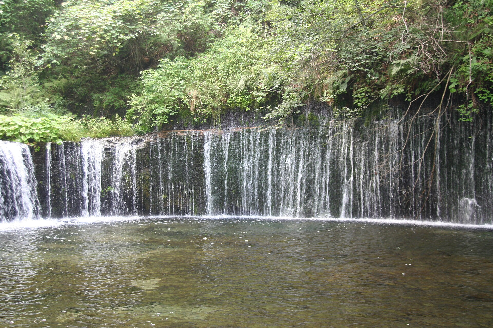
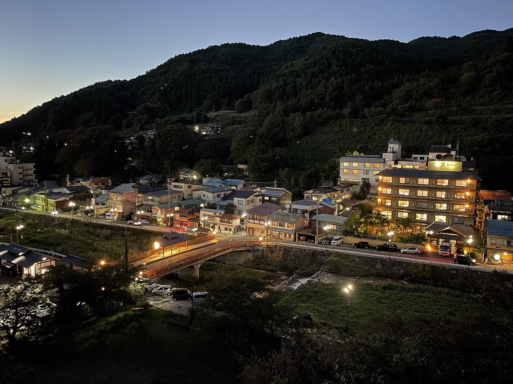

2027 日本中部冬季自駕
📅 2027年1月9日 – 1月17日 ・9日8夜 ・D2–D8 4WD＋雪軚自駕
冬季道路安全優先， 不為 Bonus 景點硬趕夜路。
新穗高／白川鄉按天氣互換， 好天優先搶雪山。
每日出發前可切去 Live Cam Page 睇天氣及道路。
香港 → 名古屋 → 松本

香港國際機場 T2
由香港機場 Check-in 開始計。 UO680 規劃 10:00 起飛， 建議約 06:45 到 T2， 預留寄行李、保安及早餐時間。
HK Express Bag Drop
辦理 UO680 及寄行李。 最遲截行李時間出發前再按 HK Express 最新資料確認。
香港國際機場
完成保安及出境後食早餐， 約 09:20 開始向登機閘口移動。
UO680 香港 → 名古屋
規劃時間 10:00 → 14:30。 2027 最終航班時間出發前再核對。
中部國際機場 T2
主行程保守預 75 分鐘處理入境及行李。 如果實際 30–45 分鐘已出禁區， 只會令名古屋轉車時間更鬆。
中部機場 → 名古屋
由 T2 前往 Access Plaza／名鐵站， 再乘 μSKY。 班次以 2026 年 12 月公布嘅 2027 正式時間為準。
名鐵名古屋 → JR 名古屋
預約 1 小時 Buffer。 入境快的話可食少量食物、 買 JR 車票或休息。
特急信濃・名古屋 → 松本
現行參考約 17:40 → 19:46。 冬季大雪有機會慢車或延誤。
TABINO HOTEL lit 松本
已訂豪華雙人房、非吸煙。 D1 酒店不包早餐。
松本城 Projection Mapping
如果準時抵達而且有精神， 可睇約 30–45 分鐘夜間光影。 活動係投射喺黑色國寶天守、 石垣及城牆， 夜晚不能入天守內部。
免費松本 → 白絲瀑布 → 鬼押出園 → 輕井澤 → 千曲



松本站一帶
酒店不包早餐。 早餐後 Check-out， 行李可暫放酒店。
松本城外圍
松本城係日本現存 12 座天守之一， 主要天守建於 16 世紀末。 外圍已可影到黑色天守、 護城河同水面倒影。 今日時間緊，以外圍 25–30 分鐘為主。
外圍免費TABINO → Times 松本站前
回酒店拎行李， 到 Times 完成文件及驗車。 10:00 取 4WD＋雪軚。
松本 → 白絲瀑布
冬季預留更多時間。 導航目的地以輕井澤白絲瀑布為準。 山岳道路遇雪必須減速。
白絲瀑布
約高 3 米、闊 70 米， 地下水由岩壁形成大量幼細水簾。 冬季積雪、冰柱同森林雪景係最大特色。 停車後步行約 200 米即可到達。
瀑布免費・道路約 ¥500/車白絲瀑布 → 鬼押出園
冬季視道路狀況慢行。
鬼押出園
1783 年淺間山大噴發留下嘅大型熔岩地貌。 黑色奇岩加冬季白雪形成強烈黑白對比。 約 45–60 分鐘可睇主要熔岩景觀、 淺間山及觀音堂。
成人約 ¥700鬼押出園／附近
簡單午餐， 避免再壓縮 Outlet 時間。
鬼押出園 → 輕井澤
雪天再預鬆。
輕井澤王子購物廣場
今次約 90 分鐘精華式 Shopping。 建議預先列出最想買品牌， 優先處理運動、戶外、服飾及生活用品。
輕井澤 → 千曲
直接去戶倉上山田溫泉， 唔再繞上田。
Club Wyndham 千曲館
已訂一泊二食。 若旅館要求較早晚餐， 優先縮短 Outlet， 唔縮冬季道路安全時間。
千曲館
住宿包晚餐， 飯後可再浸溫泉。
千曲 → 小布施 → JA Oranche → 澀溫泉


千曲館
旅館早餐。
千曲 → 小布施
今日係成人の日， 刻意唔安排 Snow Monkey。
小布施舊街＋栗之小徑
小布施係長野著名栗子產地。 中心區有町屋、庭園、栗菓子老店及細巷。 栗之小徑用栗木鋪路， 今次主力街景、栗子甜品、 栗おこわ及手信。
免費北齋館
只係有興趣先入， 約 30–45 分鐘。 今次唔會為美術館犧牲小布施街景時間。
成人約 ¥1,200小布施
可選蕎麥麵／栗おこわ。 晚餐旅館已包。
小布施 → JA Oranche
約 20 分鐘。
JA 中野市農產物產館 Oranche
地元 JA 農產直賣所。 有蔬菜、菇菌、蘋果及加工品。 重點係本地日常農產品， 唔係純旅客手信店。
JA Oranche → 澀溫泉
入溫泉街前按旅館指示泊車， 唔好跟導航亂入窄巷。
澀溫泉街
先認路、影相， 15:00 再入住。
一乃湯果亭＋九湯巡禮
住區內旅館可以借專用鎖匙 進入九個共同浴場。 穿浴衣沿石板街巡湯、蓋印係核心體驗。 唔需要勉強一次浸晒九個。
九湯巡禮住客免費一乃湯果亭
住宿包晚餐。
澀溫泉街
飯後再浸外湯， 浴衣散步及睇夜景。
澀溫泉 → 地獄谷 → 須坂 → 長野
一乃湯果亭
住宿包早餐。
澀溫泉 → 上林
退房後前往 Snow Monkey 入口一帶。
上林 → 地獄谷
約 30–35 分鐘林道， 結冰位慢行。
地獄谷野猿公苑
海拔約 850 米山谷， 冬季長期積雪。 日本獼猴係真正生活喺附近山林嘅野生猴群。 會唔會浸溫泉視氣溫同猴群行動而定。
現行成人約 ¥800地獄谷 → 上林
原路返回， 落斜結冰位更加要慢。
上林 → 須坂
約 40 分鐘。
須坂
簡單午餐， 留多啲時間 Shopping。
AEON Mall 須坂
今程重要「當地生活 Shopping」時段。 食品、生果、日用品、服裝、藥妝同補給 可以一次處理。 預約 3.5 小時。
須坂 → 長野
約 40 分鐘。
Hotel JAL City Nagano
已訂非吸煙房， 翌朝包兩位早餐。
長野市內
飯後有精神可以去 Donki／長野站附近。
長野 → 白馬岩岳 → 高山
Hotel JAL City Nagano
已包兩位自助早餐。
長野
執行李後出發。
長野 → 白馬岩岳
冬季預鬆， 遇大雪唔趕時間。
白馬岩岳山麓 → 山頂
使用非滑雪旅客觀光票上山。
白馬岩岳 Mountain Resort
今次當純雪景景點， 唔係滑雪行程。 山頂可望北阿爾卑斯、 玩雪及使用指定觀光設施。
觀光票參考約 ¥2,900/人HAKUBA MOUNTAIN HARBOR
岩岳山頂內嘅觀景露台， 可正面望白馬三山及北阿爾卑斯。
IWATAKE WHITE PARK
非滑雪旅客玩雪、散步及影相。
山頂 → 山麓
落山後午餐。
白馬
食完直接向高山出發。
白馬 → 高山
冬季長途山路。 唔為 Bonus 景點拖到夜晚先行山路。
飛驒花里之湯 高山櫻庵
已訂兩晚。 有天然溫泉及露天風呂。
高山櫻庵
D5 以溫泉及休息為主。
高山市內
第一晚晚餐彈性。
Weather Day 1・新穗高／高山市區
普通／差天： 高山市區 → 飛驒大鐘乳洞 → 高山
高山 → 新穗高
冬季山路，預鬆時間。
新穗高纜車
兩段纜車上到海拔約 2,156 米西穗高口。 第二段係雙層纜車， 山頂可近距離望穗高連峰及雪山。
成人來回約 ¥3,800新穗高
簡單午餐。
新穗高 → 高山
下午返高山， 保留冬季道路 Buffer。
宮川朝市
可買漬物、味噌、蔬菜、 小食及手工品。
高山陣屋
江戶幕府直接管治飛驒時嘅地方行政機關。
成人約 ¥500三町古街＋中橋＋酒藏
黑木格子町家、 清酒酒藏、味噌店及傳統老舖集中。 司機唔飲酒。
高山 → 飛驒大鐘乳洞
約 40 分鐘。
飛驒大鐘乳洞＋冰之溪谷
一月最大特色係冰之溪谷嘅大型藍白冰柱。 洞內亦唔太受落雪影響。
成人約 ¥1,100高山地元超市
駿河屋／Valor 等， 買飛驒牛、蔬果、牛奶及調味料。
白川鄉／新穗高・按 D6 結果
D6 未完成 → 按今日新穗高天氣再決定
高山櫻庵
退房後搬行李去 Residence。
高山 → 白川鄉
D6 已完成新穗高， 今日唔再重複天氣博弈。
荻町合掌村
一月厚雪覆蓋合掌造屋頂同農田， 係全年最具代表性季節之一。
和田家
可近距離睇木樑、 圍爐及合掌造屋頂結構。
成人約 ¥400白川鄉
鄉土定食／蕎麥麵。
荻町城跡展望台
可俯瞰整個合掌村。 私家車唔可以駛入展望台停車場， 要步行或乘接駁車。
Shuttle 約 ¥300/人/單程白川鄉 → 高山
約 1小時15分。
Residence Hotel Takayama Station
D7 星期五住宿。
10:35–13:15 新穗高纜車。
15:20 左右返高山。
完成剩餘主景點 → 松本
Scenario B： 白川鄉 → 松本
Scenario C： 新穗高 → 松本
宮川朝市
約 35 分鐘。
高山陣屋
約 40 分鐘。
三町古街＋酒藏
慢行、買手信，司機唔飲酒。
高山 → 飛驒大鐘乳洞
鐘乳洞位於去平湯／松本方向。
飛驒大鐘乳洞＋冰之溪谷
約 1小時20分。
成人約 ¥1,100飛驒大鐘乳洞 → 松本
經平湯／安房方向， 冬季預鬆。
Iroha Grand Hotel Matsumoto Ekimae
Moderate Twin， 包兩位早餐。
10:15–14:00 白川鄉
14:00 離開
約 17:15 到松本。
高山 → 新穗高
正常運行＋能見度值得先出發。
新穗高纜車
今日係最後一次機會。 如果仍然大霧／停駛， 唔再追。
成人約 ¥3,800新穗高 → 安曇野／松本
約 1小時45分。
大王山葵農場
只有非常早到安曇野先加。 唔可以因此延遲返松本。
免費松本 → AEON → 還車 → 名古屋 → 香港
Iroha Grand Hotel
房價包兩位早餐。 食完最後整理行李。
Iroha
行李全部放車內。
酒店 → AEON Mall 松本
約 15 分鐘。
AEON Mall 松本
最後補貨。 11:00 左右離開係 Hard Cut。
AEON → 油站
入滿油， 保留單據。
Times 松本站前
目標 12:10 前完成。
松本站
還車後先食午餐或買便當。
特急信濃・松本 → 名古屋
現行參考 13:56 → 16:07。 2026 年 12 月再確認。
名古屋 → 中部國際機場
現行參考 16:49 → 17:17。
中部國際機場 T2
UO685 Check-in、 保安、晚餐及候機。
名古屋 → 香港
規劃 20:40 起飛， 翌日約 00:30 抵港。
📷 Photo Credits
松本城 Projection Mapping — Hiroaki Kikuchi, CC0 1.0 — Wikimedia Commons
JR 特急信濃 383系 — Yamaguchi Yoshiaki, CC BY-SA 2.0 — Wikimedia Commons
白絲瀑布 — yuttsu, Public Domain — Wikimedia Commons
鬼押出園方向淺間山冬景 — Yu.nakai, CC BY-SA 3.0 — Wikimedia Commons
輕井澤王子購物廣場 — Daderot, CC0 1.0 — Wikimedia Commons
小布施栗之小徑 — Tawashi2006, CC BY-SA 3.0 — Wikimedia Commons
澀溫泉夜景 — Totti, CC BY-SA 4.0 — Wikimedia Commons